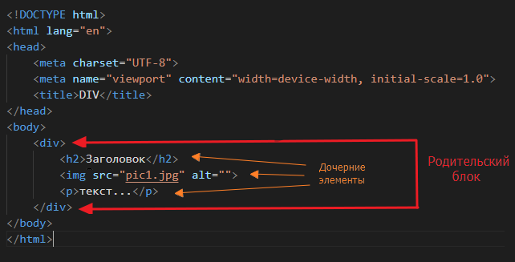
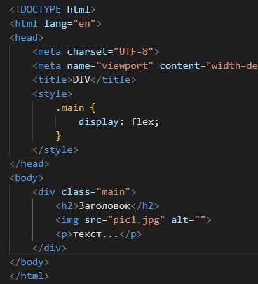

Блочная верстка
1. Все элементы страницы обычно располагают внутри блоков, которые обзначаются тегами <div></div>
По умолчанию стиль <div> имеет свойство "display: block", и это значит, что все дочерние элементы в нем расположатся друг под другом в столбик

2. Для изменения порядка расположения дочерних элементов назначим элементу <div> стиль, и в нем укажем свойство "display: flex"
Дочерние элементы расположатся в строку (это произойдет по умолчанию, если не указывать свойство "flex-direction)"

3. Любой дочерний элемент может содержать в себе другие дочерние элементы, будучи родительским по отношению к ним.

Здесь мы специально указали "flex-direction" для первого блока "row", т.е. в строку, а для второго "column", т.е. в столбик

4. Сделаем карточку товара.
Примечание: если указать ширину "width" в процентах, то это будут проценты от ширины родительского блока. Если указать "px", то это пиксели, независимо от размеров других блоков. Есть еще "vw" - проценты от ширины окна браузера.
Описание остальных стилевых свойств можно легко найти в интернете.